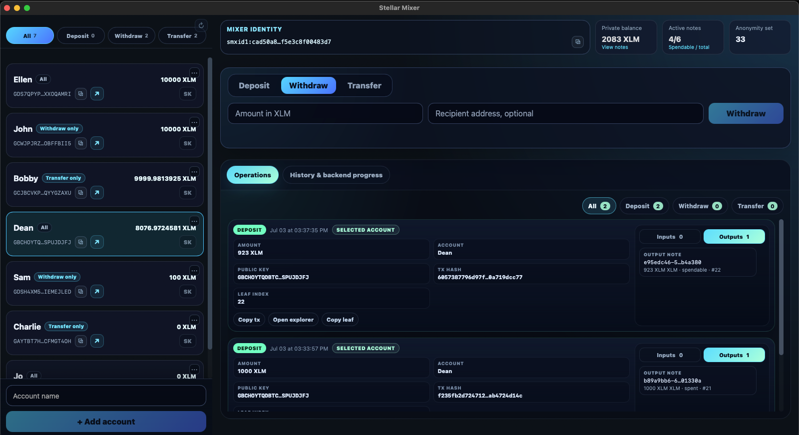

Public chains create visible links.
If a user deposits from one Stellar account and later withdraws to another account, an observer should not be able to trivially connect those two actions.
Stellar Privacy Mixer is a desktop-first mixer architecture built around private notes. It separates the user’s private state, the public Soroban contract, proof generation, Merkle-path retrieval, and event recovery into understandable pieces.
Purpose
If a user deposits from one Stellar account and later withdraws to another account, an observer should not be able to trivially connect those two actions.
The mixer does not work like a normal wallet balance. It creates notes. The public chain sees commitments and nullifiers; the user keeps the private note data locally.
TreePIR, the event server, and the Groth16 wrapper are helper services. Each one has a narrow job and should not become a custodian of funds or a holder of private note material.
Desktop application

Accounts, private balance, active notes, operations, transaction history, and proof/backend progress.
Mixer Identity, private note data, recovery material, selected accounts, and proof inputs.
Encrypted event history, nullifier sync, private Merkle-path retrieval, and proof wrapping support.
Note model
Many mixers use fixed denominations. That can simplify some analysis, but it makes ordinary payments awkward. Stellar Privacy Mixer is designed around flexible-value notes so deposits, transfers, change, and withdrawals can feel closer to normal payments.
The note owner does not publish the full note. Instead, the client constructs proof inputs locally. The proof says, in effect: “I know a valid note in the tree, and I am allowed to spend it,” without revealing which historical note is being spent.
The contract must reject double spends. A nullifier gives it a public marker for “this note has already been used” without forcing the contract to learn the plaintext note or link it directly to the deposit.
Walkthrough
The desktop creates private note data locally, publishes only a commitment to the Soroban mixer contract, and stores the full note inside the encrypted local vault.
The public chain learns that a commitment was added. It does not learn the private note contents that will later be used to spend.
Privacy boundaries
Merkle path retrieval
The server immediately learns which leaf the user is interested in. If that leaf is later spent, this can become useful correlation data.
The server still provides tree data, but the request is structured so the selected path is not handed over as a plain index.
Infrastructure
The contract is intentionally small. It stores commitments, root history, spent nullifiers, verifier configuration, and token movement rules. It does not store plaintext notes or local wallet state.
Future directions
Notes can be extended with structured payload ideas so a service can recognize what was paid for without learning the payer identity.
TreePIR servers, archive mirrors, proof wrappers, and future relayers can become paid parts of the privacy network.
Stellar fee-payer patterns can reduce the first-funding link by letting relayers pay transaction fees for users.
The most sensitive network action is transaction submission. Future clients can route that step separately while keeping sync fast.
Open-source repositories